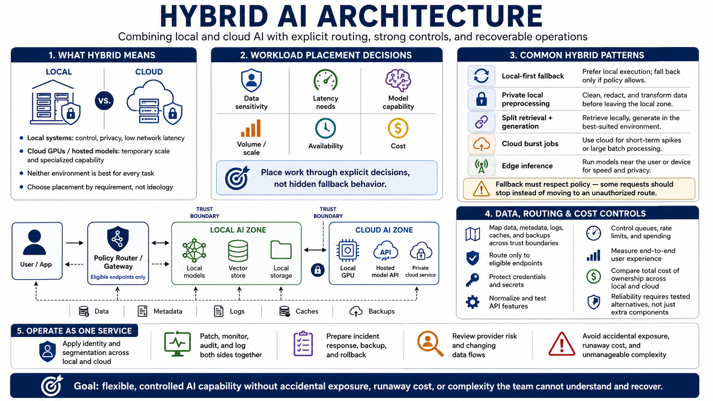

Course Summary and Key Takeaways
Connecting to LMS... Progress: in progress

Narration
Hybrid AI architecture combines local and cloud resources so each workload runs where its requirements are best satisfied. Local systems offer control, privacy, and low network latency. Cloud GPUs and hosted models offer temporary scale and specialized capability. Neither environment is inherently correct for every task.
Place work through explicit decisions about data sensitivity, latency, model capability, volume, availability, and cost. Patterns such as local-first fallback, private local preprocessing, split retrieval and generation, cloud burst jobs, and edge inference are useful only when interfaces and boundaries are documented. Fallback must respect policy; some requests should stop instead of moving to an unauthorized route.
Map data, metadata, logs, caches, and backups across every trust boundary. Route only to eligible endpoints, protect credentials, normalize tested API features, and control queues, rate limits, and spending. Measure end-to-end user experience and total cost of ownership across both environments. Reliability requires tested alternatives, not merely additional components.
Operate the system as one service. Apply identity, segmentation, patching, monitoring, audit, incident response, backup, and rollback to local and cloud components together. Review provider risk and changing data flows. The goal is flexible, controlled AI capability without accidental exposure, runaway cost, or complexity that the team cannot understand and recover.